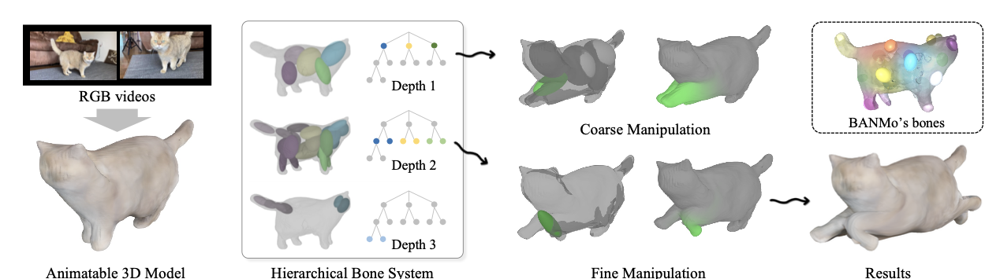

|
Minsu Kim I'm a PhD student studying computer vision at Yonsei University, advised by Prof. SeonJoo Kim. My research interests are in 3D computer vision. I'm currently looking for a research internship or visiting researcher position in 2026. |
{kind=link}
ResearchI'm interested in 3D computer vision. I'm currently working on 3D Gaussian Splatting and 3D Diffusion models. |
News[2025.06] ExploreGS accepted in ICCV 2025. |

|
ExploreGS: Explorable 3D Scene Reconstruction with Virtual Camera Samplings and Diffusion Priors
Minsu Kim, Subin Jeon, In Cho, Mijin Yoo, SeonJoo Kim ICCV, 2025 project page / arXiv / code Can we freely explore reconstructed scenes from casually captured videos whose viewpoints are not sufficient? ExploreGS introduces a novel pipeline that samples virtual viewpoints to cover missing content and leverages diffusion priors, enabling explorable 3D scenes. |
|

|
Hierarchically Structured Neural Bones for Reconstructing Animatable Objects from Casual Videos
Subin Jeon, In Cho, Minsu Kim, Woong Oh Cho, SeonJoo Kim ECCV, 2024 project page / arXiv / code We propose a new framework for creating and easily manipulating 3D models of arbitrary objects using casually captured videos. Our core ingredient is a novel hierarchy deformation model, which captures motions of objects with a tree-structured bones. |